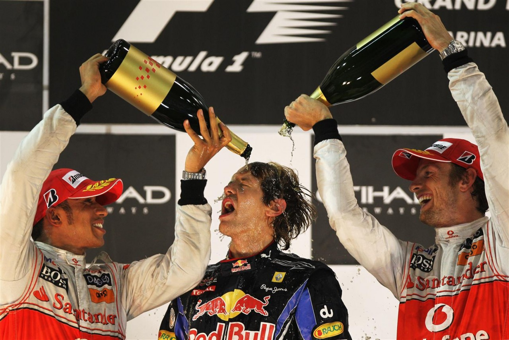
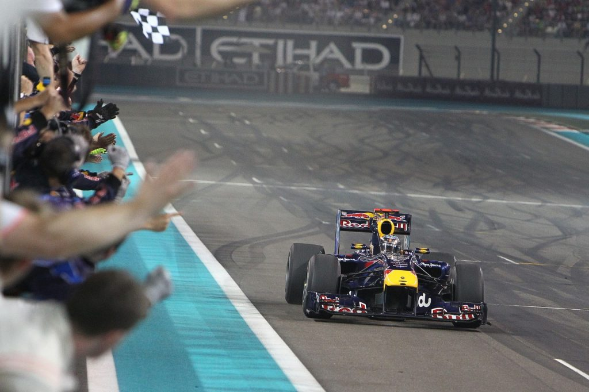

ABOUT HIS FOUR WORLD CHAMPIONSHIPS
Danke SEB!!
"Sebastian Vettel won four Formula 1 world championships with the Red Bull Racing team in 2010, 2011, 2012 and 2013. He won a total of 38 races in that period, including a nine-game winning streak in 2013. An impressive record for one of the most successful drivers in F1 history!"
| 🏆 | ESC | YEAR | GRD PRIX |
|---|---|---|---|
| 1 | REDBULL | 2010 | Abu Dhabi |
| 2 | REDBULL | 2011 | Interlagos |
| 3 | REDBULL | 2012 | Austin Txs |
| 4 | REDBULL | 2013 | Buddh |

